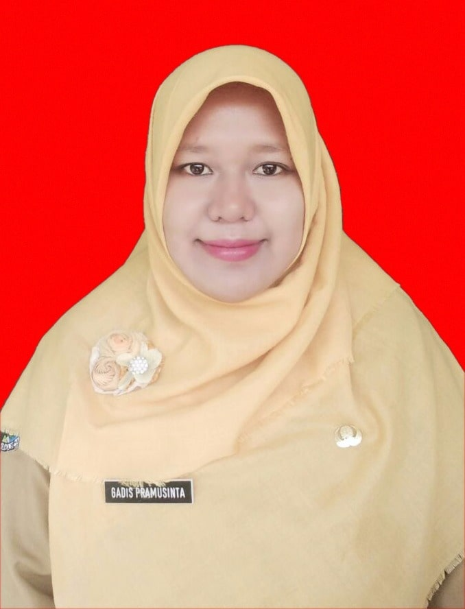

Kepala Sekolah
GADIS PRAMU SINTA,
S.Pd.
SLB NEGERI BADEGAN PONOROGO — Ponorogo, Kabupaten Ponorogo
Baca Sambutan Lengkap“Pendidikan yang berkarakter lahir dari keteladanan, bukan sekadar aturan.”

GADIS PRAMU SINTA,S.PdSambutan Kepala Sekolah
Assalamu’alaikum warahmatullahi wabarakatuh.
Selamat datang di laman profil resmi SLB NEGERI BADEGAN PONOROGO. Sebagai Kepala Sekolah, saya meyakini bahwa lembaga pendidikan bukan hanya tempat mentransfer ilmu pengetahuan, melainkan ruang tumbuh bagi karakter, kemandirian, dan nilai-nilai kebangsaan setiap peserta didik.
Bersama seluruh dewan guru, tenaga kependidikan, orang tua, dan komite sekolah, kami berkomitmen menghadirkan lingkungan belajar yang aman, inklusif, dan relevan dengan tantangan zaman — tanpa meninggalkan akar budaya dan adab yang menjadi identitas bangsa kita.
Semoga sinergi yang terjalin ini membawa keberkahan dan melahirkan generasi yang unggul secara akademik, matang secara karakter, dan siap berkontribusi bagi masyarakat.
GADIS PRAMU SINTA, S.Pd.
Kepala SLB NEGERI BADEGAN PONOROGO
Riwayat Pendidikan & Karier
-
01 April 2026 — Sekarang
Kepala Sekolah
SLB NEGERI BADEGAN PONOROGO, Ponorogo
-
2011 — 2026
Guru SMPLB Negeri Jenangan
SLB NEGERI JENANGAN
-
2006
S1 — Pendidikan Luar Biasa
Universitas Negeri Surabaya
Visi, Misi & Program Unggulan
Visi
Terwujudnya Peserta didik yang terampil mandiri berdasarkan Iman dan Taqwa.
Misi
- Membina mental spiritual subjek dana objek pendidikan agar mampu memikul amanat dan tanggungjawab
- Menguatkan kolaborasi sekolah, keluarga, dan masyarakat.
- Melakukan Kerjasama yang baik seluruh unsur ( Stageholder) terkait dengan pendidikan di SLBN Badegan.
- Mengoptimalkan proses pembelajaran dan bimbingan.
- Mendidik dan mengembangkan potensi siswa menggunakan metode yang memperhatikan tingkat kemampuan dan keterbatasan peserta didik.
- Mengembangkan bidang ilmu Pengetahuan dan Teknologi berdasarkan minat, bakat dan potensi peserta didik serta memupuk rasa percaya diri.
- Membina kemandirian peserta didik melalui kegiatan pembiasaan, kewirausahaan dan pengembangan diri yang terencana dan berkesinambungan.
- Meningkatkan peran serta warga sekolah dalam perilaku jujr, hidup bersih, hidup sehat,rukun dan peduli lingkungan
Tiga Program Unggulan
Kelas Riset & Literasi
Membekali siswa dengan kemampuan berpikir kritis, riset sederhana, dan budaya membaca sejak dini.
Sains & Inovasi Terapan
Laboratorium proyek lintas disiplin untuk mendorong siswa menciptakan solusi nyata bagi lingkungan sekitar.
Kepemimpinan & Karakter
Pembinaan kepramukaan, organisasi siswa, dan kegiatan sosial untuk menumbuhkan jiwa kepemimpinan.
Galeri Kegiatan & Prestasi